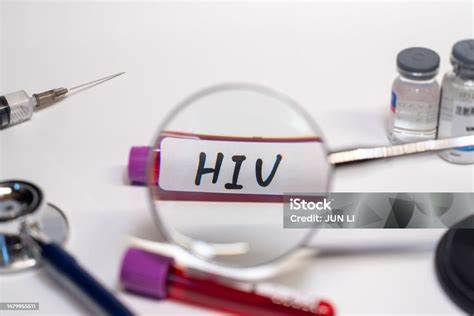
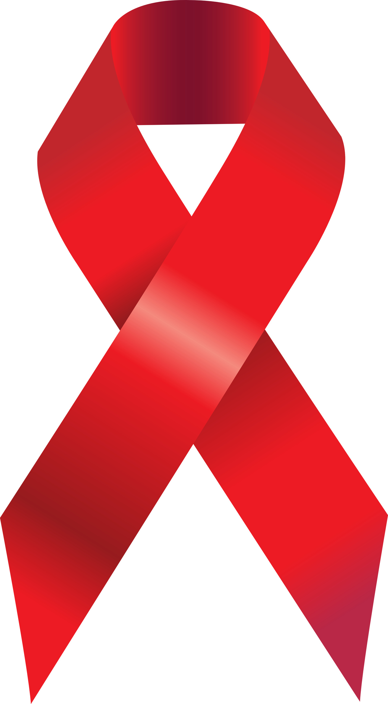

VIH et Droits au Travail : Protéger les Travailleurs Infectés
1er Décembre 2024
Sur le chemin des droits
VIH et Droits au Travail : Protéger les Travailleurs Infectés
1er Décembre 2024, journée mondiale de lutte contre le VIH/SIDA.
Cette année, la journée mondiale de lutte contre le VIH/SIDA a pour thème : “Sur le chemin des droits”.
Depuis plus de quatre décennies, le monde est confronté à cette pandémie. Le VIH/SIDA est marqué par d’importantes inégalités géographiques, touchant particulièrement les pays d’Afrique subsaharienne. Cependant, au niveau mondial, les personnes vivant avec le VIH (PVVIH) continuent de subir des discriminations et des comportements avilissants. Ces inégalités ont motivé ONUSIDA à centrer ses activités en 2024 autour du thème des droits.
À propos de l’infection à VIH/SIDA
Il existe une confusion fréquente entre l’infection par le VIH et la maladie SIDA.
- VIH (Virus de l’Immunodéficience Humaine) : Une personne porteuse du VIH peut être : - Séroignorante (ne connaissant pas son statut sérologique, n’ayant pas fait de dépistage). - Informée (ayant un diagnostic positif). - SIDA (Syndrome d’Immunodéficience Acquise) : C’est la phase avancée de l’infection par le VIH, souvent atteinte en l’absence de traitement.
Importance du dépistage
Les personnes séroignorantes jouent un rôle clé dans la propagation de l’épidémie en raison de comportements inconscients ou irresponsables. Le dépistage est donc essentiel pour : 1. Freiner la transmission. 2. Accéder à une prise en charge adaptée.
Des avancées majeures ont été réalisées, comme l’introduction des autotests, des centres de dépistage volontaire (CDV) et d’autres structures de dépistage. Cependant, la stigmatisation reste une barrière majeure.
VIH vs SIDA : Une distinction importante
La stigmatisation des PVVIH découle souvent d’une incompréhension entre le VIH et le SIDA.
Être porteur du VIH ne signifie pas avoir le SIDA. Avec un traitement antirétroviral (ARV) approprié, les PVVIH peuvent vivre longtemps et en bonne santé, avec une charge virale indétectable qui réduit drastiquement la transmission.
Progrès en matière de prévention et de traitement
- Préservatifs : Moyen de prévention éprouvé.
- PrEP (Prophylaxie pré-exposition) : Médication préventive pour les personnes non infectées exposées à des risques.
- PEP (Prophylaxie post-exposition) : Traitement d’urgence après une potentielle exposition au VIH.

En outre, il est prouvé qu’une personne vivant avec le VIH, sous traitement antirétroviral efficace pendant plusieurs années, peut avoir des relations sexuelles sécurisées avec un(e) partenaire séronégatif(ve).
Lutte contre la stigmatisation
Les PVVIH sont confrontées à des comportements discriminatoires, souvent basés sur des préjugés et un manque d’information. La lutte contre cette stigmatisation repose sur : 1. L’éducation et la sensibilisation des communautés. 2. L’accès universel aux soins et au dépistage. 3. La promotion des droits humains des PVVIH.

En 2024, le thème “Sur le chemin des droits” rappelle l’importance de garantir : - Une égalité de traitement. - Une protection contre la discrimination, notamment au travail. - L’accès aux soins et aux médicaments essentiels.
Conclusion
La lutte contre le VIH/SIDA ne se limite pas à des efforts médicaux. Elle repose aussi sur la défense des droits des personnes infectées, la sensibilisation, et l’élimination des inégalités sociales et économiques. Continuons à marcher “sur le chemin des droits” pour un monde où chacun, quel que soit son statut sérologique, peut vivre dans la dignité et le respect.

Références
-
ONUSIDA (UNAIDS)
Site officiel de l’ONUSIDA pour des informations globales sur la lutte contre le VIH/SIDA.
-
Organisation Mondiale de la Santé (OMS)
Ressources sur le VIH/SIDA, y compris les stratégies de prévention et les traitements.
-
CDC (Centers for Disease Control and Prevention)
Informations détaillées sur le VIH, la PrEP, la PEP et les approches de prévention.
-
AIDES
Organisation française engagée dans la lutte contre le VIH et la promotion des droits des PVVIH.
-
Human Rights Watch : VIH et droits humains
Rapports sur les discriminations et les droits humains liés au VIH/SIDA.
https://www.hrw.org/topic/hivaids
-
Sidaction
Organisation française dédiée à la prévention et au soutien des PVVIH.
-
Programme des Nations Unies pour le développement (PNUD)
Études sur l’impact du VIH sur le développement humain et les droits humains.
https://www.undp.org/fr/hiv-aids
-
Médecins Sans Frontières (MSF)
Initiatives de MSF pour fournir des soins aux PVVIH dans les zones à faible revenu.
https://www.msf.org/hiv-aids
-
Santé Publique France
Données épidémiologiques françaises sur le VIH/SIDA et les initiatives de prévention.